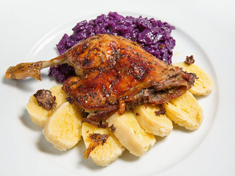

Roast duck

Description
Czech roast duck with red cabbage and potato dumplings is a traditional Czech dish that is usually served during special occasions such as Christmas or Easter. The duck is seasoned with salt, pepper and caraway seeds, then roasted in the oven until the skin is crispy and golden brown. The red cabbage is braised with red wine, apples, and spices, resulting in a tangy and sweet side dish. The potato dumplings are made with grated potatoes, flour, and egg, then boiled until tender and served sliced.
This dish is known for its rich and hearty flavors and is a staple of Czech cuisine.
(and its good)
Ingredients
For the duck:
- 1 whole duck
- Salt
- Black pepper
- Caraway seeds
For the red cabbage:
- 1 small head of red cabbage
- 1 apple
- 1 onion
- 1 tablespoon butter
- 1 tablespoon sugar
- 1 tablespoon red wine vinegar
- 1 cup red wine
- Salt and pepper
- Cloves, cinnamon and baz leaves (optional)
For the potato dumplings:
- 4-5 large potatoes
- 1 egg
- 1 cup flour
- Salt and pepper
Steps
- Preheat the oven to 350°F (180°C)
- Season the duck inside and out with salt, pepper and caraway seeds. Stuff the cavity with the quartered onion, apple, and orange
- Place the duck in a roasting pan and roast for about 2 to 2 1/2 hours, until the skin is crisp and the meat is tender
- While the duck is roasting, prepare the red cabbage. In a large pot, melt the butter over medium heat. Add the shredded cabbage and diced apple and cook for 5 minutes, stirring occasionally
- Pour in the red wine, chicken stock, apple cider vinegar, and brown sugar. Bring to a boil, then reduce heat and let simmer for 1 hour, stirring occasionally
- To make the potato dumplings, mix together the grated potatoes, egg, flour, salt, and pepper. Form the mixture into small dumplings, about 2 inches in diameter
- Bring a large pot of salted water to a boil. Add the potato dumplings and cook for about 10 minutes, until they float to the top
- Remove the duck from the oven and let it rest for 10 minutes. Carve the meat and serve with the red cabbage and potato dumplings. Garnish with bread crumbs
Enjoy!
Back to homepage